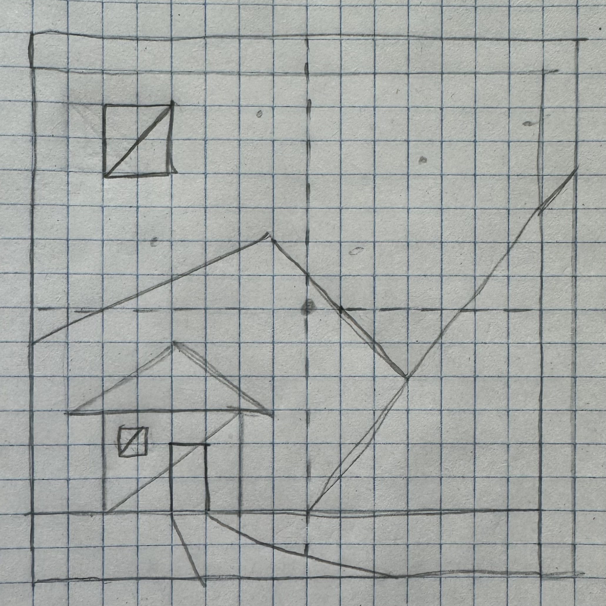

XXX
Red
Green
Blue
Size
Number of Segments
--------------------------------------------------------
Awesomeness: Try out night and day options!
--------------------------------------------------------
Original Sketch of Triangle House
